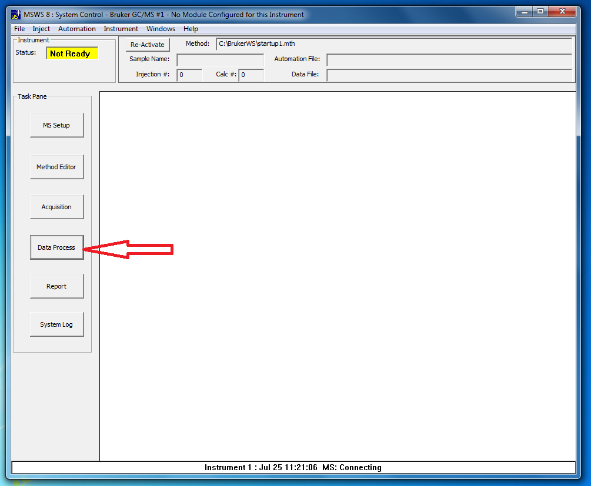
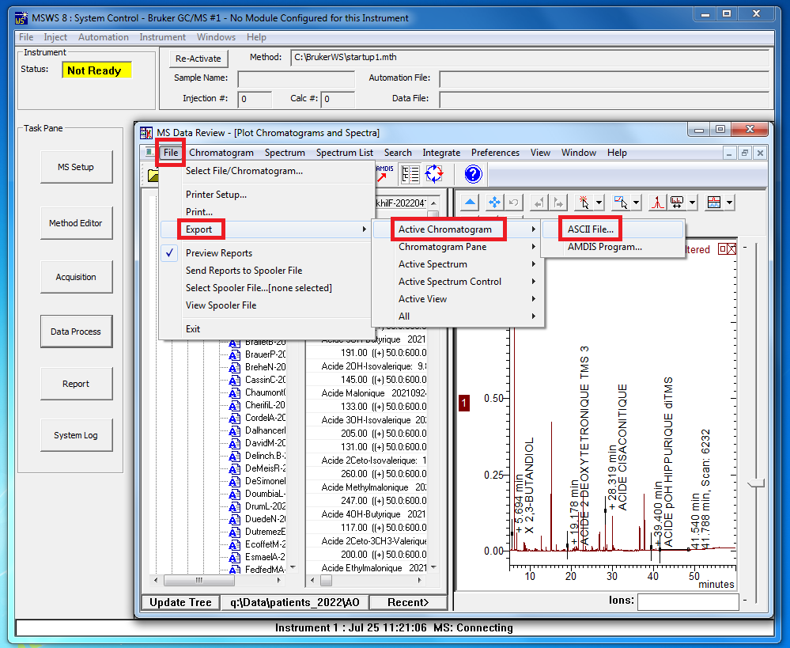
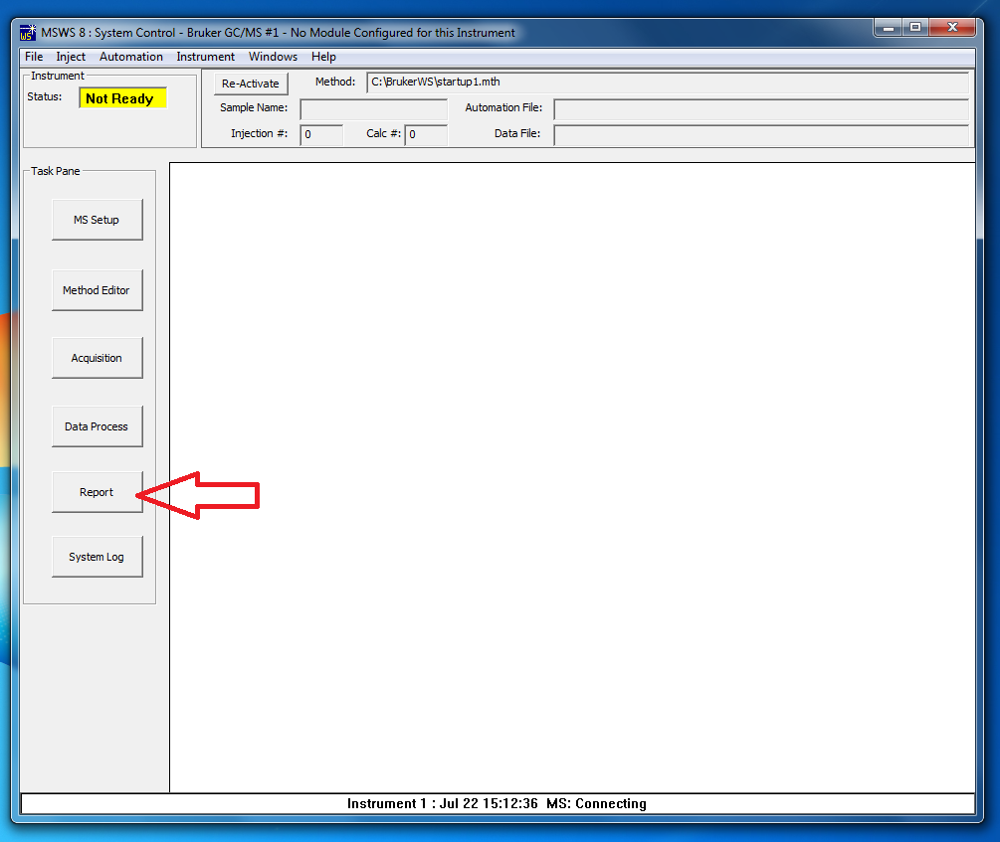
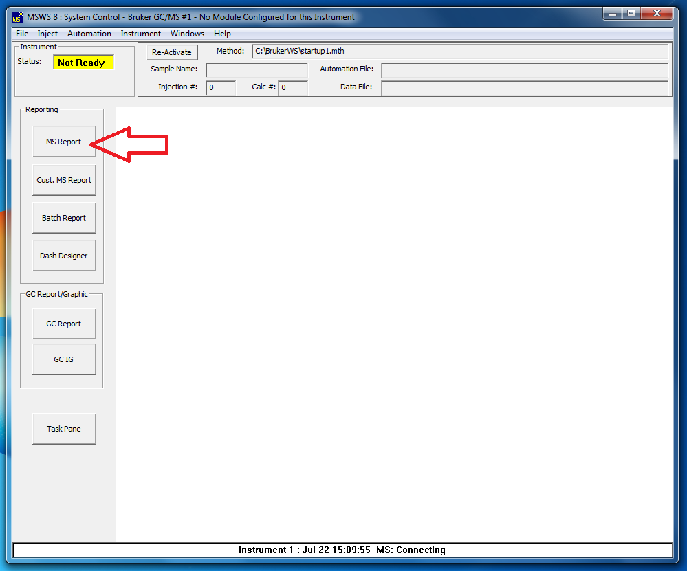
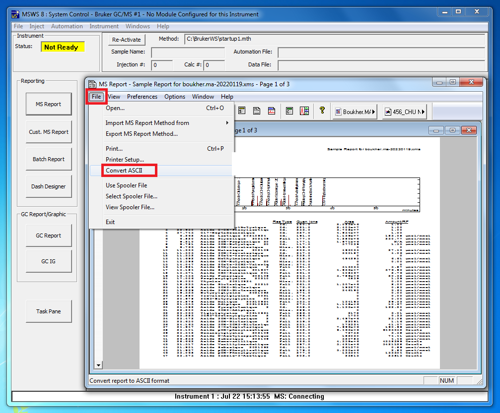
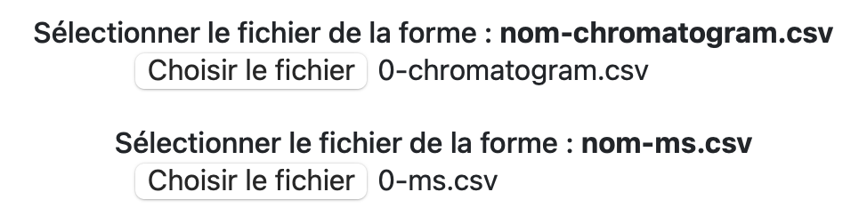

Ce guide est destiné à l'utilisation de la page d'analyse
Ici vous allez pouvoir analyser le résultat que l'intelligence articielle a établi sur votre fichier patient.La page Analyse se décompose en plusieurs parties intéressantes :
1) Un premier bouton "Choisir le fichier" pour importer le fichier du type nom-chromatogram.csv
2) Un second bouton "Choisir le fichier" pour importer le fichier du type nom-ms.csv
3) Un bouton "Analyser" qui permet l'exécution de l'algorithme et l'affichage des résultats
Étape 1 : Créer le fichier nom-chromatogram.csv
Premièrement, il est impératif de disposer d'un fichier csv pour pouvoir le visualiser, pour se faire, ouvrez le logiciel de traitement Brucker MSWS puis sélectionnez le bouton "Data Process"
Allez ensuite dans le dossier correspondant au patient recherché puis suivez cette étape :
Cliquez en haut à gauche sur File --> Export --> Active chromatogram --> ASCII File

Vous venez de créer un fichier csv qui sera utilisable sur ce site.
Conservez le bien à un endroit dont vous vous rappelerez.
Étape 2 : Créer le fichier nom-ms.csv
Pour effectuer les analyses, nous avons besoin d'un second document concernant le même patient, voici le tuto pour l'obtenir :Ouvrez le logiciel Brucker MSWS puis sélectionnez le bouton "Report".

Puis le bouton "MS Report".

Une nouvelle fenêtre va s’ouvrir, sélectionnez le fichier du patient que vous désirez convertir puis appuyez sur le bouton Open File en bas de la fenêtre.
Un nouveau fichier se génère mais il n’est toujours pas au bon format.
Il faut donc le convertir, en suivant les étapes de la photo suivante.

Il ne vous reste plus qu’à enregistrer le fichier à l’endroit souhaité, il est préférable de le mettre au même endroit que le fichier créer lors de l'étape 1.
Étape 3 : L'analyse
Vous allez maintenant pouvoir vous rendre sur la page "Analyse du site".Sur le premier bouton, allez sélectionner le fichier nom-chromatogram créé lors de l'étape 1.
Sur le second bouton, allez sélectionner le fichier nom-ms créé lors de l'étape 2.
Votre page devrait à présent ressembler à ça :

Il ne reste plus qu'à appuyer sur le bouton "Analyser" et l'algorithme va faire le reste.